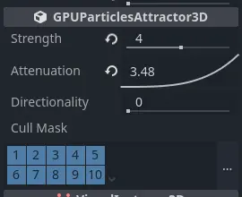
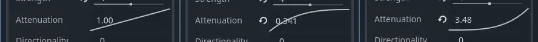
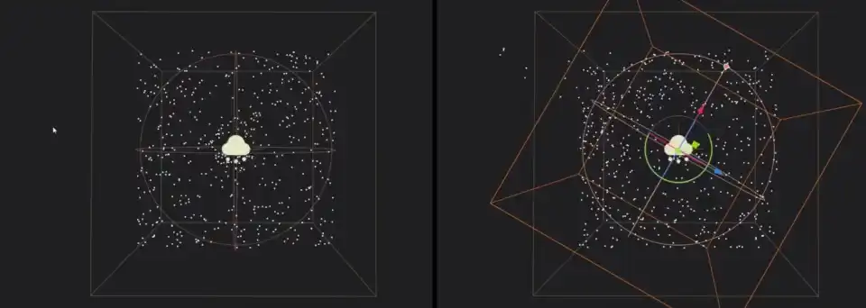
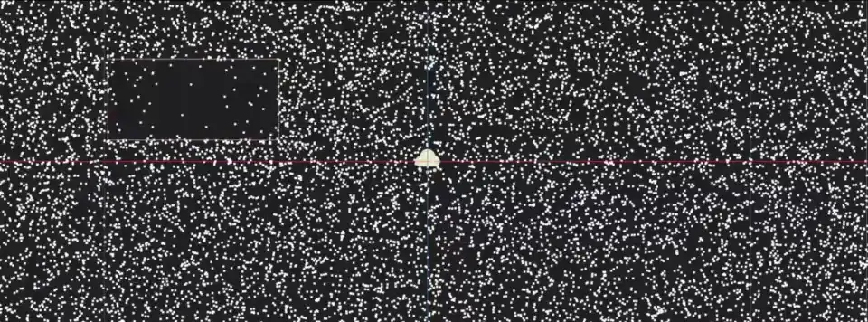
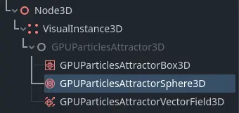
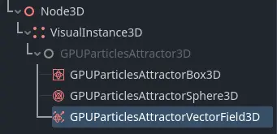
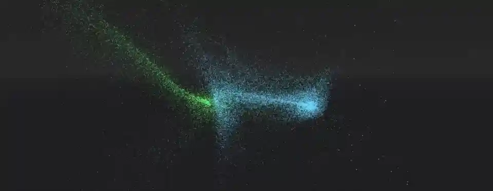

3D Particle attractors

Particle attractors are nodes that apply a force to all particles within their reach. They pull particles closer or push them away based on the direction of that force. There are three types of attractors: GPUParticlesAttractorBox3D, GPUParticlesAttractorSphere3D, and GPUParticlesAttractorVectorField3D. You can instantiate them at runtime and change their properties from gameplay code; you can even animate and combine them for complex attraction effects.
Note
Particle attractors are not yet implemented for 2D particle systems.
The first thing you have to do if you want to use attractors is enable the Attractor Interaction
property on the ParticleProcessMaterial. Do this for every particle system that needs to react to attractors.
Like most properties in Godot, you can also change this at runtime.
Common properties

Common attractor properties
There are some properties that you can find on all attractors. They're located in the
GPUParticlesAttractor3D section in the inspector.
Strength controls how strong the attractor force is. A positive value pulls particles
closer to the attractor's center, while a negative value pushes them away.
Attenuation controls the strength falloff within the attractor's influence region. Every
particle attractor has a boundary. Its strength is weakest at the border of this boundary
and strongest at its center. Particles outside of the boundary are not affected by the attractor
at all. The attenuation curve controls how the strength weakens over that distance. A straight
line means that the strength is proportional to the distance: if a particle is halfway
between the boundary and the center, the attractor strength will be half of what it is
at the center. Different curve shapes change how fast particles accelerate towards the
attractor.

Strength increase variations: constantly over the distance to the attractor (left), fast at the boundary border and slowly at the center (middle), slowly at the boundary and fast at the center (right).
The Directionality property changes the direction towards which particles are pulled.
At a value of 0.0, there is no directionality, which means that particles are pulled towards
the attractor's center. At 1.0, the attractor is fully directional, which means particles
will be pulled along the attractor's local -Z-axis. You can change the global direction
by rotating the attractor. If Strength is negative, particles are instead pulled along
the +Z-axis.

No directionality (left) vs. full directionality (right). Notice how the particles move along the attractor's local Z-axis.
The Cull Mask property controls which particle systems are affected by an attractor based
on each system's visibility layers. A particle system is only
affected by an attractor if at least one of the system's visibility layers is enabled in the
attractor's cull mask.
Box attractors

Box attractor in the node list
Box attractors have a box-shaped influence region. You control their size with the Extents
property. Box extents always measure half of the sides of its bounds, so a value of
(X=1.0,Y=1.0,Z=1.0) creates a box with an influence region that is 2 meters wide on each side.
To create a box attractor, add a new child node to your scene and select GPUParticlesAttractorBox3D
from the list of available nodes. You can animate the box position or attach it to a
moving node for more dynamic effects.

A box attractor with a negative strength value parts a particle field as it moves through it.
Sphere attractors

Sphere attractor in the node list
Sphere attractors have a spherical influence region. You control their size with the Radius
property. While box attractors don't have to be perfect cubes, sphere attractors will always be
spheres: You can't set width independently from height. If you want to use a sphere attractor for
elongated shapes, you have to change its Scale in the attractor's Node3D section.
To create a sphere attractor, add a new child node to your scene and select GPUParticlesAttractorSphere3D
from the list of available nodes. You can animate the sphere position or attach it to a
moving node for more dynamic effects.

A sphere attractor with a negative strength value parts a particle field as it moves through it.
Vector field attractors

Vector field attractor in the node list
A vector field is a 3D area that contains vectors positioned on a grid. The grid density controls how many vectors there are and how far they're spread apart. Each vector in a vector field points in a specific direction. This can be completely random or aligned in a way that forms distinct patterns and paths.
When particles interact with a vector field, their movement direction changes to match the nearest vector in the field. As a particle moves closer to the next vector in the field, it changes direction to match that vector's direction. The particle's speed depends on the vector's length.
Like box attractors, vector field attractors have a box-shaped influence region. You control their size with the Extents
property, where a value of (X=1.0,Y=1.0,Z=1.0) creates a box with an influence region that is
2 meters wide on each side. The Texture property takes a 3D texture
where every pixel represents a vector with the pixel's color interpreted as the vector's direction and size.
Note
When a texture is used as a vector field, there are two types of conversion you need to be aware of:
The texture coordinates map to the attractor bounds. The image below shows which part of the texture corresponds to which part of the vector field volume. For example, the bottom half of the texture affects the top half of the vector field attractor because
+Ypoints down in the texture UV space, but up in Godot's world space.The pixel color values map to direction vectors in space. The image below provides an overview. Since particles can move in two directions along each axis, the lower half of the color range represents negative direction values while the upper half represents positive direction values. So a yellow pixel
(R=1,G=1,B=0)maps to the vector(X=1,Y=1,Z=-1)while a neutral gray(R=0.5,G=0.5,B=0.5)results in no movement at all.

To create a vector field attractor, add a new child node to your scene and select GPUParticlesAttractorVectorField3D
from the list of available nodes. You can animate the attractor's position or attach it to a
moving node for more dynamic effects.
Tip
If you don't have external tools to create vector field textures, you can use a NoiseTexture3D with a Color Ramp attached as a vector field texture. The Color Ramp can be modified to adjust how much each coordinate is affected by the vector field.

Two particle systems are affected by the same vector field attractor. Click here to download the 3D texture.